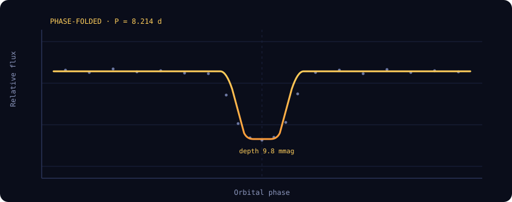

Transit-model fitting of TIC 261136679 with uncertainties from posterior sampling.

from depth × stellar radius
depth / baseline scatter
radius ratio
calibrated probability
Parameter uncertainties are derived from the posterior distribution sampled with an MCMC (affine-invariant ensemble) after maximum-likelihood optimisation. Reported values are the posterior median; error bars are the 16th–84th percentile (1σ) credible interval.